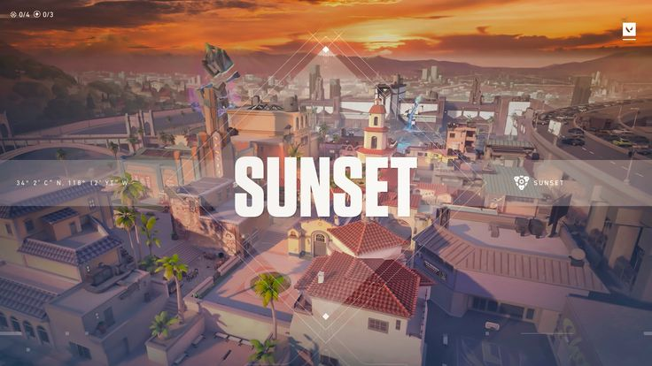
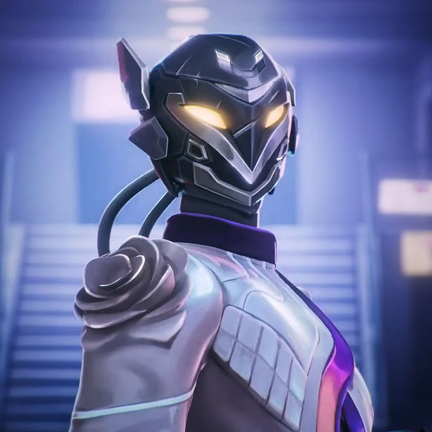

Valorant
Depois do grande sucesso do League of Legends (LoL) pelo mundo,
a Riot Games resolveu apostar em outro gênero de jogo:
o First-Person Shooter (FPS) -
ou jogo de tiro em primeira pessoa, em português.
Assim, durante o primeiro semestre de
2020, Valorant era apresentado como novo
de águas da desenvolvedora e que
rapidamente se tornando um grande sucesso.
Bastante parecido com o Counter-Strike: Global Offensive (CS:GO) -
um dos maiores títulos desta categoria -
o Valorant mantém a proposta de tiro em primeira pessoa tático em equipe (5 contra 5),
mas com suas particularidades.
Aqui contaremos tudo, ou quase tudo, sobre o VALORANT
quais são os objetivos, agentes, armas, mapas, cenário de competições (esports), etc.
MIBR Contrata Aspas
O MIBR oficializou a reformulação no elenco de Valorant,
com Erick "aspas" como principal contratação para a temporada 2025.
Campeão mundial com a LOUD em 2022 e com passagem pela latino-americana
Leviatán neste ano, aspas volta a trabalhar com o treinador
norte-americano Daniel "fRoD".

Novo Mapa "Sunset"
Sunset, o novo mapa de VALORANT inspirado em Los Angeles.
O Sunset tem uma rota do meio bastante difícil de controlar e, na prática,
não favorece nenhuma das equipes. É uma rota boa para alcance de rifles
e oferece diversas oportunidades para a equipe que conseguir dominá-la.

Novo Agente "VYSE"
A mestre dos metais!!
Vyse usa metal líquido para isolar,
prender e desarmar os inimigos.
Com astúcia e manipulação,
ela faz todos os adversários que a enfrentam temerem o próprio campo de batalha.
Vyse é da classe "Controlador" e possui 3 habilidades e 1 ULT.

Novo Agente "VYSE"
A mestre dos metais!!
Vyse usa metal líquido para isolar,
prender e desarmar os inimigos.
Com astúcia e manipulação,
ela faz todos os adversários que a enfrentam temerem o próprio campo de batalha.
Vyse é da classe "Controlador" e possui 3 habilidades e 1 ULT.
Novo Agente "VYSE"
A mestre dos metais!!
Vyse usa metal líquido para isolar,
prender e desarmar os inimigos.
Com astúcia e manipulação,
ela faz todos os adversários que a enfrentam temerem o próprio campo de batalha.
Vyse é da classe "Controlador" e possui 3 habilidades e 1 ULT.